트레일러Trailer
처음 3초는 새로 설치한 상태에서 1구역 첫 판을 실제로 플레이한 장면입니다(끈적이 물방울 피하기 → 멈춰서 쏘기 → 끈적이가 씻겨 나감 → 강아지 구출). 나머지도 모두 게임 화면을 그대로 녹화했고, 소리는 게임이 그 순간 낸 효과음과 배경음을 그대로 섞었습니다. 마지막 엔드 카드만 게임 스프라이트로 따로 그렸습니다.
The first 3 seconds are real footage of a fresh install's first run of area 1 (dodging a goo droplet → stopping to spray → the goo washing away → the puppy freed). Everything else is also recorded straight from the game, with the sound effects and music the game played at those moments. Only the end card is drawn separately, from the game's sprites.
H.264 · 1080×1920 · 30 fps · 8.7 MB · 자막: 한국어, 영어 (vtt/srt, 영상 안 자막 트랙 포함)Subtitles: Korean, English (vtt/srt, also embedded as tracks)
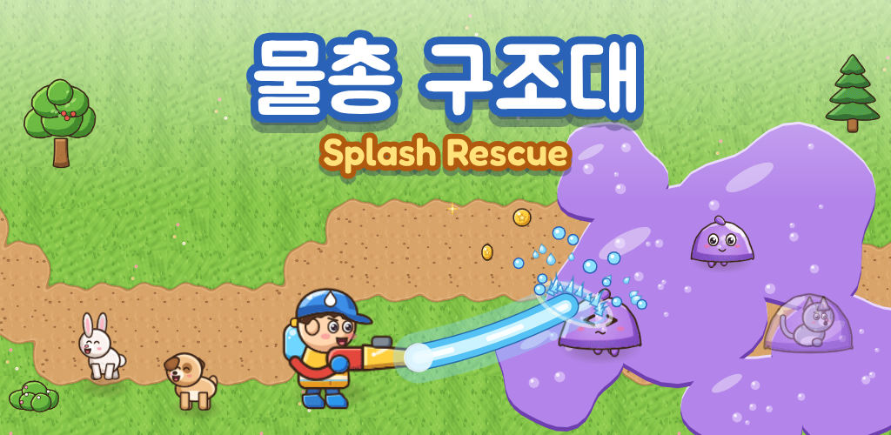
대표 이미지 1024×500 · 아이콘 512×512Feature graphic 1024×500 · Icon 512×512
스크린샷Screenshots
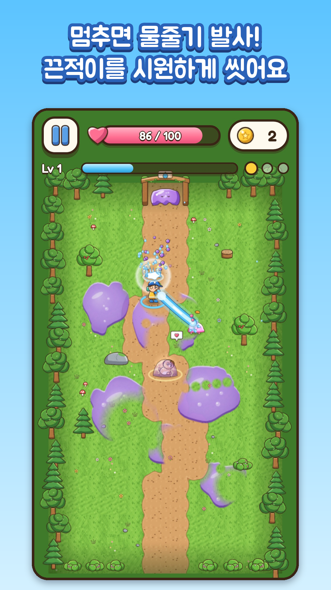
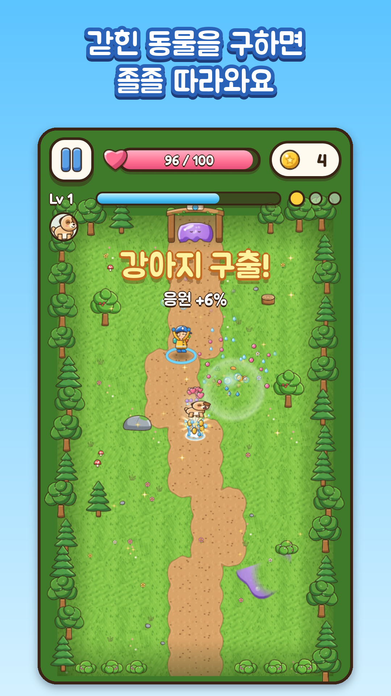
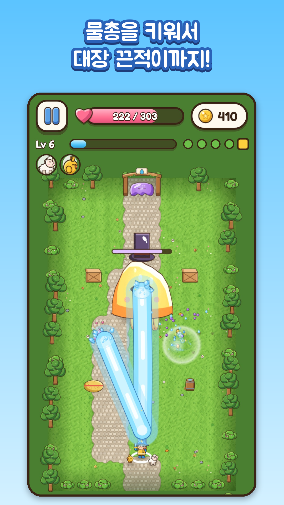
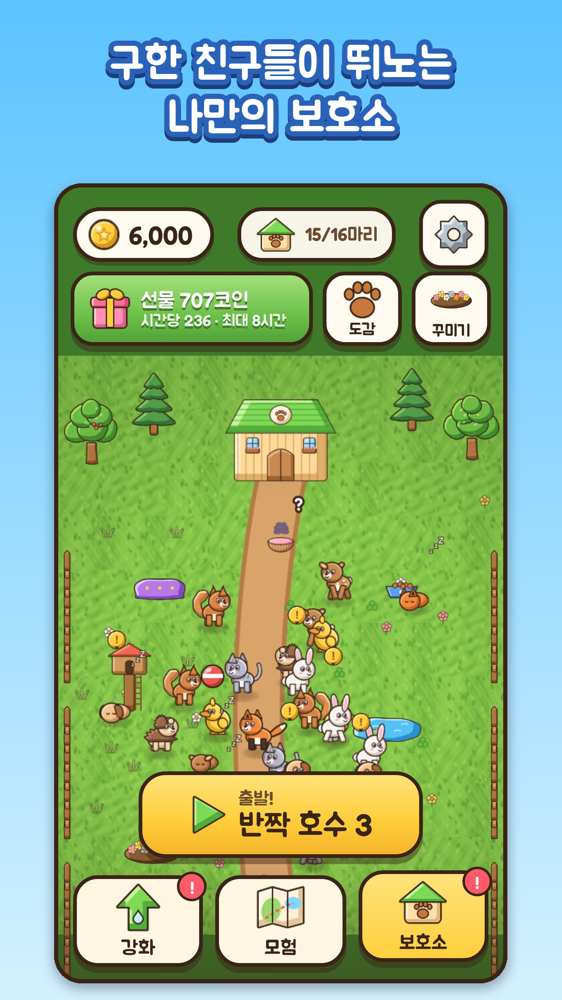
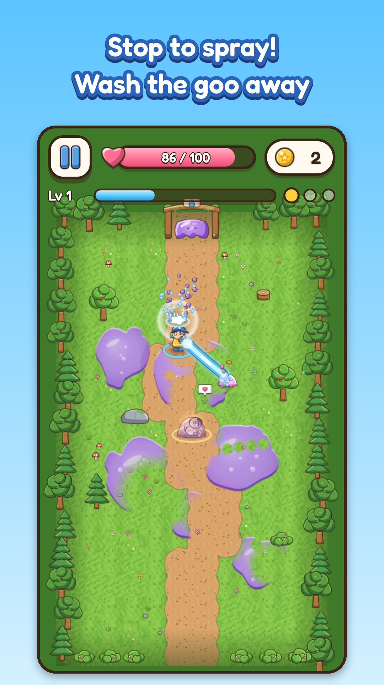
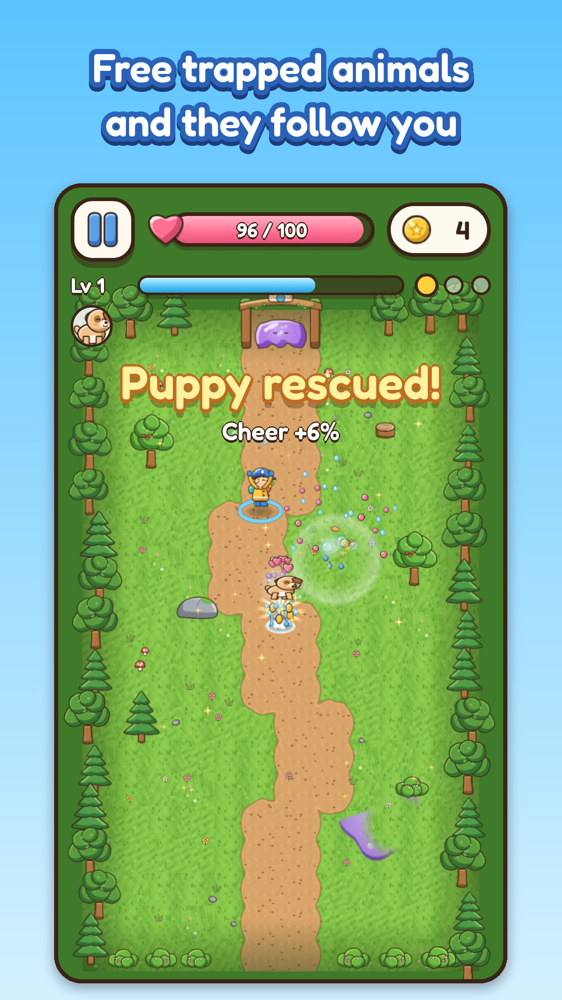
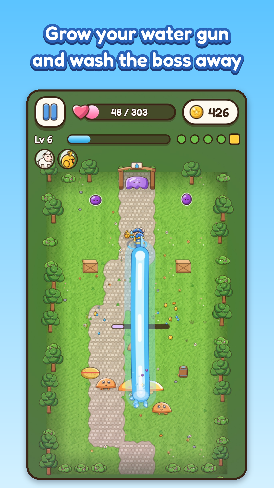
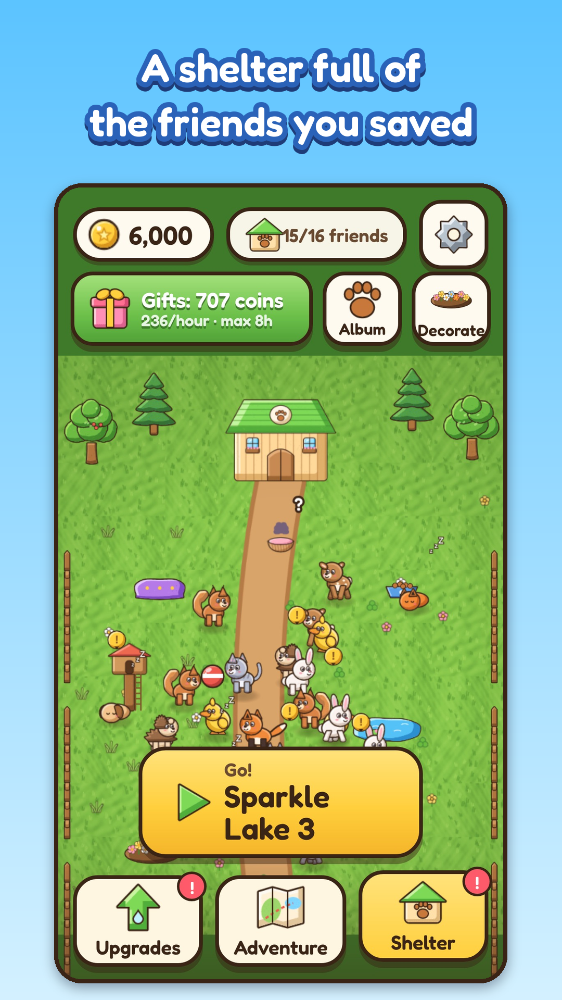
스토어 문구Store listing
앱 이름
물총 구조대
짧은 설명
엄지 하나로 끈적이를 씻어 내고 갇힌 동물을 구하는 물총 액션
자세한 설명
숲과 마을과 호수가 보라색 끈적이로 뒤덮였어요. 물총 하나 들고 씻으러 가 볼까요?
움직이면 피하고, 멈추면 쏴요 화면 아무 데나 엄지를 대고 끌면 움직이고, 손을 떼면 가장 가까운 끈적이에게 물줄기가 저절로 나가요. 오래 버티고 서 있을수록 수압이 차올라 물줄기가 굵어지지만, 그만큼 끈적이 물방울에 맞기도 쉬워요. 피할지, 버티며 쏠지는 매번 내가 정해요.
씻으면 깨끗해지는 맛 맞은 끈적이는 출렁이다 쪼그라들고 퐁 하고 물보라로 터져요. 물줄기가 지나간 바닥은 맑아지고, 방을 다 비우면 남은 끈적이가 한꺼번에 씻겨 나가요.
갇힌 동물 구하기 끈적이 고치에 갇힌 강아지, 토끼, 여우, 수달…… 물줄기로 고치를 씻어 내면 동물이 튀어나와 졸졸 따라와요. 구한 동물은 보호소에서 뛰어놀고, 동물마다 체력·코인·물줄기 같은 보너스를 줘요.
한 판은 1~2분 방 3~5개를 비우면 한 구역이 끝나요. 레벨이 오를 때마다 능력 카드 3장 중 하나를 골라 그 판을 내 방식대로 키워요. 져도 그 판에서 구한 동물과 코인은 그대로 남아요.
작은 물총에서 거대 물대포까지 코인으로 물줄기 세기, 사거리, 체력, 수압, 물보라를 강화하면 물총이 7단계로 진화해요. 강화하면 물줄기가 그 자리에서 굵어지는 걸 바로 볼 수 있어요.
담긴 것
- 햇살 숲, 풍차 마을, 반짝 호수의 30개 구역과 보스 3마리
- 움직임이 제각각인 끈적이 9종
- 동물 친구 16종(그중 2종은 출석 도장으로 놀러 와요)과 보호소 꾸미기 8종
- 판 안에서 고르는 능력 카드 14종
- 날짜마다 규칙이 바뀌는 오늘의 도전, 오늘의 임무 3개, 7일 출석 도장
- 토·일요일마다 구역에서 얻는 코인이 1.5배가 되는 주말 물놀이 축제
- 같은 구역에서 두 번 지면 친구들이 응원하러 와서 그 판을 도와줘요
마음 편하게 광고와 인앱 결제가 없어요. 하트나 에너지 없이 원하는 만큼 이어서 할 수 있어요. 한 손으로, 세로 화면으로 즐겨요. 한국어와 영어를 지원해요.
App name
Splash Rescue
Short description
Wash away cute goo with one thumb and rescue the animals trapped inside!
Full description
Purple goo has covered the forest, the village and the lake. Grab your water gun and let's clean it up!
Move to dodge, stop to spray Put your thumb anywhere and drag to move. Let go, and your water gun sprays the nearest goo on its own. The longer you hold your ground, the more pressure builds and the thicker your stream gets, but standing still also makes you an easy target. Dodge or stand and spray: it's your call every time.
That washing feeling Hit goo wobbles, shrinks and bursts into spray with a pop. The ground turns clean wherever your stream passes, and when a room is clear, the leftover goo washes away in one big wave.
Rescue trapped animals Puppies, bunnies, foxes, otters and more are stuck in goo cocoons. Wash a cocoon off and the animal hops out and follows you around. Every friend you save moves into your shelter and gives you a bonus, like more health, more coins or a stronger stream.
Runs take a minute or two Clear 3 to 5 rooms to finish an area. Each time you level up, pick one of three skill cards and build the run your way. Even if you lose, you keep every animal and coin from that run.
From a tiny squirt gun to a giant water cannon Spend coins on stream power, range, health, pressure and splash, and your water gun evolves through 7 stages. The upgrade screen shows your stream getting thicker the moment you buy.
What's inside
- 30 areas across Sunny Forest, Windmill Village and Sparkle Lake, with 3 bosses
- 9 kinds of goo, each with its own trick
- 16 animal friends (two of them visit through the stamp card) and 8 shelter decorations
- 14 skill cards to pick from during a run
- A Daily Challenge with new rules each day, 3 daily tasks and a 7-day stamp card
- The Weekend Splash Festival: coins from areas ×1.5 every Saturday and Sunday
- Lose the same area twice and your friends come to cheer you on with a boost for that run
Play at your own pace No ads and no in-app purchases. No hearts or energy, so play as long as you like. Made for one hand in portrait. Available in English and Korean.
점검 근거Check evidence

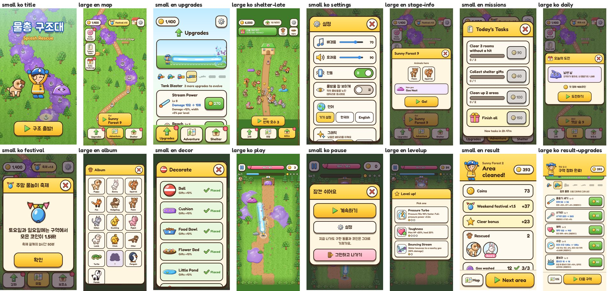
UI 자동 검사 화면 일부 (22화면 × 2폰 × 2언어)UI audit sample (22 screens × 2 phones × 2 languages)
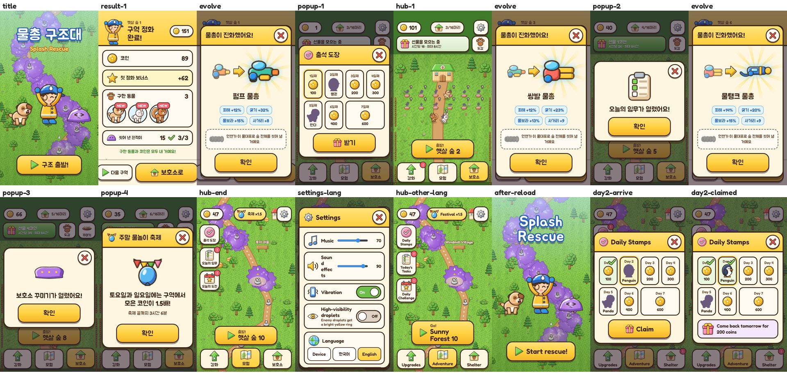
처음 하는 사람 여정: 작은 폰 · 한국어First-timer journey: small phone · Korean
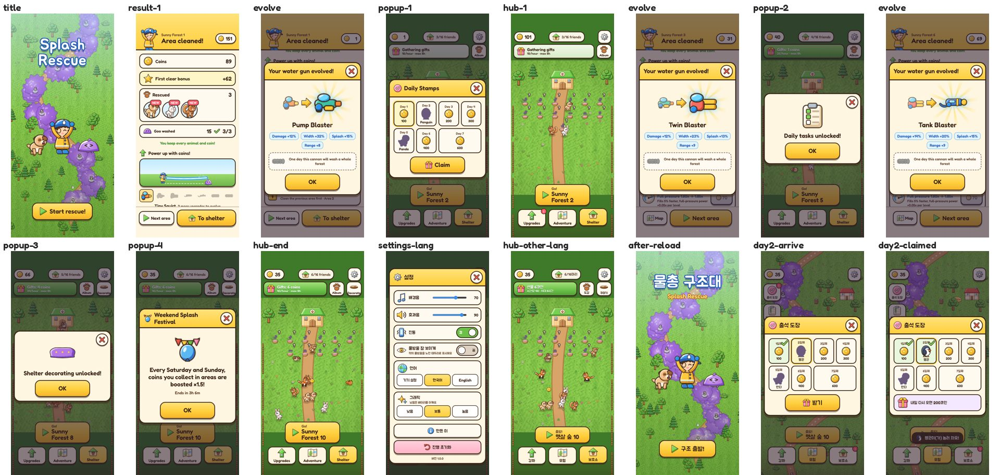
처음 하는 사람 여정: 큰 폰 · 영어First-timer journey: large phone · English
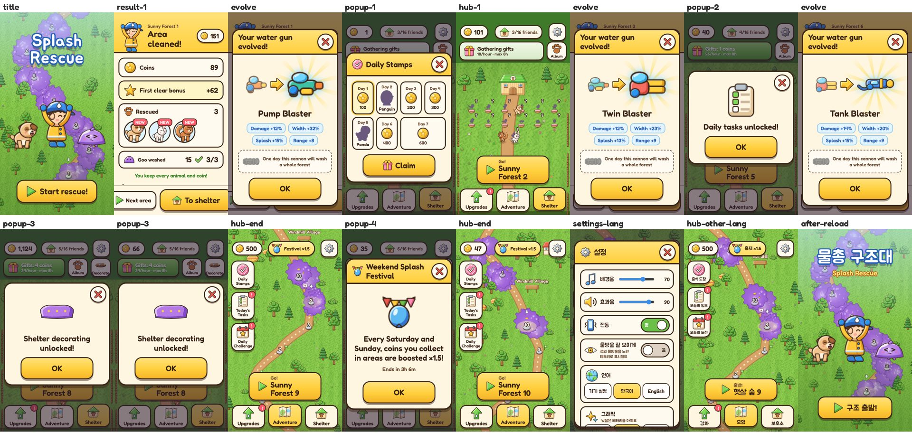
처음 하는 사람 여정: 작은 폰 · 영어First-timer journey: small phone · English
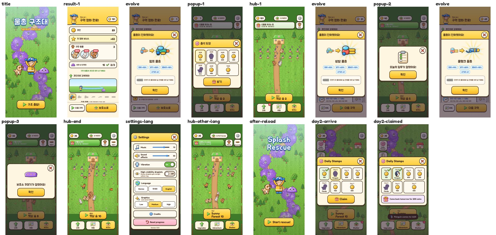
처음 하는 사람 여정: 큰 폰 · 한국어First-timer journey: large phone · Korean
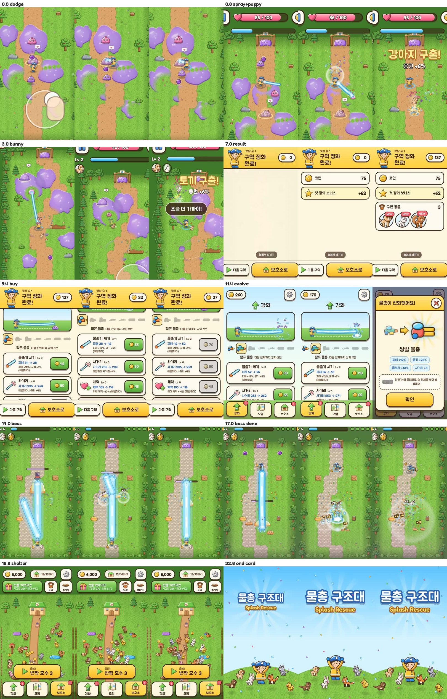
트레일러 구간별 검토 (처음·중간·끝 프레임)Trailer review by segment (start, middle, end)
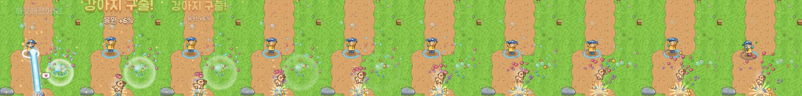
구출 순간: 동물이 효과 위로 튀어나옴Rescue: the animal pops out above the effects
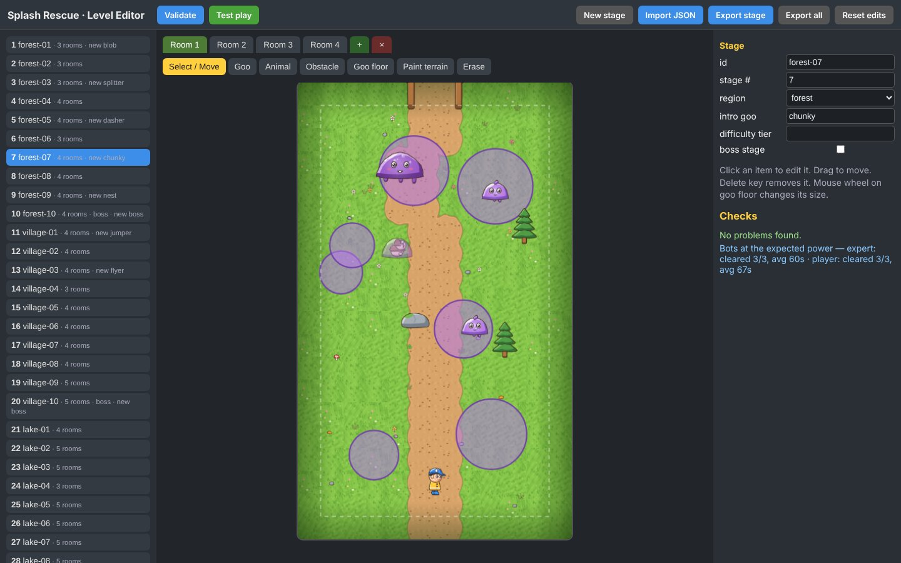
레벨 에디터Level editorvalidate.txt · progression.txt · art-check.txt · ui-audit.txt · perf-1x.txt · perf-4x.txt · perf-auto-4x.txt · audio-lifecycle.txt · trailer-review.md
문서Documents
The plan and the report are written in Korean.
결과 보고서Report
물총 구조대 (Splash Rescue) — 결과 보고서
사람에게 묻지 않고 진행한 작업이라, 판단마다 근거를 남겼습니다. "확인함"이라고 쓴 것은 아래 근거(명령, 파일, 수치)가 있는 것만입니다. 실제 휴대폰에서 해 보지 못한 것은 7장에 따로 모았습니다.
1. 만든 것
| 무엇 | 어디 |
|---|---|
| 게임 (세로, 한 손, 정적 웹 페이지) | out/index.html (+ out/assets/) |
| 개발용 빌드 (디버그 패널 포함) | out/dev.html |
| 레벨 에디터 (목록·캔버스·속성 한 화면, 끌어 배치, 검증, 테스트 플레이, 가져오기/내보내기) | out/editor.html |
| 출시 키트 쇼케이스 | out/release/index.html |
| 스토어 문구 (한/영) | out/release/store/ko.md, en.md |
| 아이콘 512, 대표 이미지 1024×500, 스크린샷 8장(한/영 4장씩) | out/release/icon-512.png, feature-1024x500.png, screenshots/ |
| 트레일러 (H.264, 세로 1080×1920) + 자막(한/영, vtt·srt) | out/release/trailer.mp4, subtitles/ |
| 기획서 (변경 이력·버린 아이디어 포함) | out/release/plan.md (원본 docs/plan.md) |
게임 내용: 3개 지역 30구역(구역마다 방 3~5개, 모두 125방), 끈적이 9종 + 보스 3, 동물 16종(구역에서 14종, 출석 도장으로 2종), 판 안 능력 카드 14종, 영구 강화 5종, 물총 7단계 진화, 보호소(선물·꾸미기 8종·친밀도), 오늘의 도전·오늘의 임무·7일 출석 도장·주말 물놀이 축제, 실패 시 응원(도움) 3단계. 광고·결제·상점·유료 재화·하트/에너지 없음.
기술: TypeScript + Canvas2D, 고정 60Hz 결정론적 시뮬레이션(같은 시드 → 같은 판, 브라우저와 Node 양쪽에서 동작), DOM UI, Web Audio. 모든 스프라이트·타일·아이콘은 art/src의 코드가 그리고(헤드리스 Chromium), 음악·효과음은 audio/src의 코드가 만든다(FluidR3 GM 사운드폰트만 외부 음원, MIT). 레벨은 data/levels/stage-XX.json 한 파일에 한 구역, 밸런스 수치는 src/config/balance.ts 한 곳.
2. 반복별 가설 · 바꾼 것 · 결과
| 회차 | 가설 / 관찰 | 바꾼 것 | 결과 (근거) |
|---|---|---|---|
| v0.1 기획 | "움직이면 피하고 멈추면 쏜다"에 멈춘 보상이 보여야 한다 | 수압(멈춰 쏘면 고리가 차고 물줄기가 굵고 밝아짐, 최대 1.8배), 끈적이 바닥은 느리게 | 프로토타입 스크린샷에서 수압 고리·굵기 변화 확인 |
| v0.2 첫 플레이테스트 | 폰에서 캐릭터가 작다, 끈적이 바닥이 페인트 같다, 고치가 안 보인다, 알림 글자가 겹친다 | 방 576×960으로 축소(1.25배 크게), 젤리층(테두리·두께·광택·거품), 고치 금빛 고리, 큰 알림은 한 번에 하나(리본 큐) | 같은 장면 재촬영으로 확인. 버림: 방 클리어 시 고치 자동 해방(구하러 가는 선택이 사라짐) |
| v0.3 메타 UI | 허브 도착 시 팝업 4개 연속 → 흐름이 끊긴다 | 이미 보이는 해금은 알림 생략, 꾸미기는 동물 5종에, 출석은 하루 한 번 자동 | 첫 세션 흐름 녹화에서 팝업 1개로 |
| v0.4 진행 시뮬레이션 | 봇이 30구역을 첫 시도에 0.6시간 만에 깸 → 너무 쉽다. 원인: 물줄기가 탄을 막아 멈춰도 위험 없음, 사거리 무한 성장 | 탄 막기 제거, 사거리 상한, 체력·피해 2차식, 후반 템포·탄속, 강화 비용 상승, 보스 체력 1700→1250, 연속 실패 시 도움 강화 | 봇 64판(1.6시간)에 30구역, 첫날(14판) 10구역, 보스 3~5회 (tools/progression.ts) |
| v0.5 아트 구조 검사 | 잘린 프레임이 있을 것이다 | 검사기(tools/check-art.mjs)가 잘린 보스·왕방울·동물·호스 발견 → 프레임 확장, 투명 여백 트림으로 텍스처 3.3장 → 1.5장 |
539프레임 문제 0건 |
| v0.6 UI 전수 검사 | 언어·화면 크기마다 넘침·겹침이 있을 것이다 | 22화면 × 2폰 × 2언어 자동 검사 도구, 52건 수정(보호소 제목, 아이콘 옆 그림 비침, 스크롤 끝 가림, 한국어 글자 중간 줄바꿈) | 88화면 0건 (tools/ui-audit.mjs) |
| v0.6 재방문 | 일주일 리듬을 만들 이벤트가 없다 | 주말 물놀이 축제(토·일 구역 코인 1.5배). 옆 버튼 → 작은 폰에서 출발 버튼과 겹쳐 상단 알약으로 | 월요일 설치 64판 / 토요일 설치 56판 (곡선 유지) |
| v0.6 정확한 숫자 | 물총 진화 창이 "더 굵고 멀리"만 말한다 | 표에서 계산한 실제 증가량 칩(피해·굵기·물보라·사거리) | 진화 화면 녹화로 확인 |
| v0.6 트레일러 녹화로 본 플레이 | 프레임 단위로 보면 놓친 게 보일 것이다 | ① 구출 순간 강아지가 효과에 1.5초 가려짐 → 동물을 모든 효과 위로, 점프·크기 변화 ② 첫 방 구출 말풍선이 계속 남아 끈적이를 가림 → 고치를 맞히면 사라짐 ③ 후반 물대포가 방 1/4을 덮는 알약 → 그리는 굵기만 완만한 상한 | 같은 시드로 다시 녹화해 비교 (evidence/rescue-pop.jpg, evidence/trailer-review.jpg) |
| v0.6 여정 테스트 | 처음 하는 사람처럼 10분 해 보면 흐름이 끊기는 곳이 있을 것이다 | 설정에서 언어를 바꾸면 설정 창이 닫히고 허브 알림이 다시 돔 → 허브를 그 자리에서 다시 그리고 창 유지. 리본 우선순위(구출이 안내 뒤로 밀리지 않게) | 4개 조합 여정 오류 0 (3장 [13]) |
| v0.6 지역 첫 판 | 새 지역 첫 판이 벽이면 그만둔다 | 21구역 방 5→4, 예산 85% | 21구역 증명 1/5 → 5/5, 첫 시도 강화에서 숙련 봇 1/5 → 5/5 |
| v0.6 성능 | 저사양에서 픽셀 비용으로 프레임이 무너질 수 있다 | 그래픽 "자동"의 단계 낮추기 | CPU 4배 느리게: 보통 15fps → 자동으로 낮음, 60fps (3장 [10]) |
3. 기준별 확인 결과와 근거
표의 "근거"는 다시 돌려 볼 수 있는 명령(6장)이나 저장소의 파일입니다. 그림 근거는 out/release/evidence/에 모았습니다.
[1] 기획
| 기준 | 결과 | 근거 |
|---|---|---|
| 누가·언제·왜 재미있는지, 참고 게임에서 배운 것/다르게 한 것 | 기획서 2·10장 | release/plan.md |
| 한 줄 소개·핵심 재미·조작·한 판 흐름·성장/재방문·아트/사운드 | 기획서 1~9장 | 같은 파일 |
| 변경 이력과 버린 아이디어 | v0.1~v0.6, 회차마다 "버린 아이디어" | 같은 파일 끝 |
[2] 코어와 손맛
| 기준 | 결과 | 근거 |
|---|---|---|
| 작은 행동에 즉각 반응, 큰 성공일수록 크게 | 맞힘(출렁임·물방울) < 터짐(물보라·소리 음높이 상승·짧은 진동) < 방 정화(남은 끈적이가 물결로 씻김·두 번 진동) < 구출(슬로모션 0.45초·동물 점프·하트·하프 소리·응원 리본). 수압이 차면 고리·굵기·밝기로 보임 | 트레일러 0.8~7초, 스크린샷 01·02 |
| 효과가 화면을 가리지 않음 | 프레임 단위 검토에서 가림 3건을 찾아 고침(구출 동물이 효과에 가려짐, 구출 말풍선이 계속 남음, 후반 물줄기가 방 1/4을 덮음). 큰 알림은 한 번에 하나, 구출·경고가 안내보다 먼저 | 2장 v0.6, evidence/rescue-pop.jpg |
| 실패가 이해되고 다시 하고 싶게 | 결과 화면에 가장 많이 맞은 공격에 맞춘 한 줄 팁(8종), "다시 하기"가 큰 버튼, 구한 동물·코인은 남는다고 표시, 같은 구역 2연패부터 응원(체력 +30%·피해 +20%, 최대 3단계) | src/ui/result.ts, src/config/balance.ts의 ASSIST |
[3] 레벨·콘텐츠·첫 경험
| 기준 | 결과 | 근거 |
|---|---|---|
| 설명 없이 몇 초 안에 할 일을 앎 | 첫 판: 손 그림 "끌어서 움직여요" → 처음 움직이면 "손을 떼면 발사!" → 처음 최대 수압에 한 번 안내. 글을 안 읽어도 손 그림과 반응으로 이해되게. 첫 판은 봇 3종 모두 5/5, 초보 봇이 강화 0으로 1~3구역 5/5 | validate.ts 출력 |
| 새 요소는 하나씩, 익힐 시간 | 1구역 말랑·퉤퉤 → 2 웨이브 → 3 쪼개 → 4 엄폐물 → 5 돌진 → 7 왕방울 → 9 둥지 → 10 보스 → 11 통통 → 13 날개 → 21 물 지형, 그 구역 첫 방엔 새 끈적이 혼자(+말랑이 2), 처음 만날 때 이름·행동 배너 | 기획서 7장, tools/levelgen/gen.py의 INTRO |
| 쉬움·생각·발견의 강약, 쉬운 판만 이어지지 않음 | 쉬어 가는 판 6·14·24, 생각하는 판 4·8·12·16·18·23·26·28, 보스 10·20·30. 진행 시뮬레이션: 1 |
progression.ts 출력 |
| 첫날에 다 소진되지 않음 | 봇 기준 30구역까지 64판(1.6시간, 하루 14판이면 5일). 사람은 더 오래 걸린다고 본다 | 같은 출력 |
| 모든 판을 깰 수 있는지 자동 검증 | 30구역 구조(경계·겹침·도달 가능·조준 가능·웨이브) + "그 구역을 깰 때의 강화"에서 숙련 봇 증명. 결과 all stages valid. 21구역(호수 첫 판)이 증명 1/5로 벽이었음 → 방 5→4개·예산 85%로 낮춰 5/5 | validate.ts 출력, 2장 |
| 막혔을 때 돕는 장치 | 판마다 무료 부활 1회, 연속 실패 응원 3단계, 실패 팁, 이전 구역 다시 하기 | 기획서 6장 |
| 이탈 원인 판별 기준·지표 | 조작/난이도/메타/지루함/성능별 판별 이벤트와 핵심 지표 | 기획서 8장 |
| 레벨 데이터 분리, 판마다 파일 | data/levels/stage-01.json … stage-30.json (125방) |
저장소 |
| 레벨 편집 도구 | 목록·캔버스·속성 한 화면, 끌어 배치, 지형 칠하기, 봇 검증, 시험 플레이(개발 빌드로 바로), 가져오기·내보내기, 자동 저장 | out/editor.html, evidence/editor.jpg |
[4] 메타·경제·재방문
| 기준 | 결과 | 근거 |
|---|---|---|
| 얻는 곳과 쓰는 곳의 균형 | 얻기: 판 코인, 첫 정화·다시 정화 보너스, 오늘의 임무, 오늘의 도전, 출석, 보호소 선물, 주말 축제. 쓰기: 영구 강화 5종(최대 15 |
progression.ts, balance.ts |
| 더 어려운 도전을 할 이유 | 구역 번호가 클수록 정화 보너스가 커짐(50+12×구역), 새 동물은 새 구역에만, 보스 뒤 새 지역 | balance.ts의 REWARDS |
| 내일 다시 켤 이유와 열리는 시점 | 출석 도장(첫날부터, 2일차 펭귄·5일차 판다), 오늘의 임무(2구역), 오늘의 도전(3구역), 주말 축제(3구역, 토·일), 꾸미기(동물 5종), 보호소 선물(최대 8시간 쌓임) | 기획서 6장 표 |
| 메타가 코어를 방해하지 않음 | 알림은 허브에 도착했을 때만 하나씩. 여정 테스트 10분 동안 팝업 3~4개(출석, 임무 열림, 꾸미기 열림, 축제) | evidence/qa-*.jpg, 7장 여정 결과 |
| 결과를 분명하고 화려하게, 바로 다음 판 | 코인 카운트업 → 보너스 → 구한 동물(NEW·친밀도) → 씻은 양 → 그 자리에서 강화(미리보기에서 물줄기가 굵어짐) → 큰 "다음 구역" 버튼. 탭하면 연출 건너뜀 | 트레일러 7~11초 |
| 광고·결제·상점·유료 재화 없음 | 화면 문자열 전체에서 상점/결제/광고/구매/유료 관련 단어 0건, 해당 화면·코드 없음 | 문자열 검사 |
[5] 출시 연동 자리
| 기준 | 결과 | 근거 |
|---|---|---|
| 로그인·클라우드 저장·분석 자리표시 | AuthService, CloudSave 인터페이스(지금은 게스트·로컬 저장), 분석은 AnalyticsProvider를 바꿔 끼우는 구조(디버그 버퍼 + 원격 전송 자리) |
src/services/ |
| 팝업이 흐름을 끊지 않음, 보상 연출 탭으로 넘김 | 판 중에 뜨는 창은 레벨 업 카드와 쓰러졌을 때의 다시 일어나기 선택뿐(일시정지는 플레이어가 누를 때만). 결과 연출은 아무 데나 탭하면 모두 표시 | src/app.ts announceQueue, src/ui/result.ts skip |
| 분석 이벤트 정의와 호출 | 31종 정의, 모두 호출 지점 있음: install, session_start/end, load_complete, tutorial_step, tutorial_complete, run_start/end, room_clear, level_reached, stage_first_clear, currency_earn/spend, upgrade_buy, gun_evolve, animal_rescue, skill_pick, revive, shelter_open, gift_collect, decor_buy, mission_complete, daily_start/end, streak_claim, festival_view, feature_unlock, settings_change, assist_offer, perf_sample, error | src/services/analytics.ts |
[6] 아트
| 기준 | 결과 | 근거 |
|---|---|---|
| 하나의 스타일, 같은 것은 어디서나 같은 모습 | 모든 그림을 같은 코드(갈색 굵은 외곽선·셀 음영·광택)로 그림. 게임·UI 아이콘·스토어 그림·트레일러 엔드 카드가 같은 스프라이트를 씀 | art/src, 스크린샷 |
| 헷갈리지 않는 아이콘, 이모지 없음 | 아이콘 52종(메뉴·능력 카드·강화 포함)을 모양과 색으로 구분해 따로 그림. 화면 문자열의 이모지 0건 | 문자열 검사 |
| 구조 검사와 시각 검사를 나눔 | 구조: 540프레임·애니메이션 93세트, 프레임이 페이지 안·빈 프레임 없음·투명 모서리·잘림 없음·세트 크기/기준점 일치·발 위치 고정·타일 이음매 → 문제 0건. 시각: 접촉 시트와 실제 화면 스크린샷을 눈으로 확인 | tools/check-art.mjs |
| 동작 애니메이션과 표정·상태 변화 | 아이: 대기 4·달리기 6·쏘기 2·승리 4·슬픔 2·맞음. 동물: 걷기·대기·기쁨·잠·갇힘. 끈적이와 보스 3종: 보통·맞음(>< 눈)·공격 직전(볼 부풀림) | 같은 검사의 세트 목록 |
| 이펙트 스프라이트, 타일셋 | 물보라·충돌·고리·빛·반짝임·하트·물방울 등. 잔디 4종 + 길·물·모래·돌길 듀얼 그리드 16조각씩 | art/src/fx.ts, env.ts |
| 생성 도구 활용 | 이미지 생성 모델이 없어 코드로 그림(4장) | — |
[7] 사운드와 진동
| 기준 | 결과 | 근거 |
|---|---|---|
| 다채롭고 거슬리지 않음, 옛날 칩튠이 아님 | 배경음 6곡(지역마다 다른 악기 편성, 61~77초 이음매 없는 반복), 징글 3, 효과음 45. 실제 악기 음원(사운드폰트) + 합성. 음량 −18 LUFS 기준, 클릭 0건 | audio/REPORT.md |
| 앱을 나갔다 와도 소리 정상 | 화면이 가려지면 오디오 일시정지, 돌아오면 재개(visibilitychange·pagehide·pageshow·focus). 헤드리스에서 화면 숨김을 흉내 내 확인: 보임(재생 중, 효과음 48개 준비) → 숨김(오디오 일시정지, 음악 멈춤) → 다시 보임(재생 재개). 실제 휴대폰 백그라운드 전환은 미확인(7장) | src/engine/audio.ts, evidence/audio-lifecycle.txt |
| 세기가 다른 진동, 끄기, 미지원 환경 | tick 6ms·light 12·medium 24·heavy 38-30-38·success·fail 패턴, 설정 토글, navigator.vibrate가 없으면 아무것도 안 함. 헤드리스 Chromium에서 진동이 막혀도 오류 없이 진행 |
src/engine/haptics.ts, 여정 테스트 오류 0 |
| 안내 음성 | 없음(4장) | — |
[8] UI·UX
| 기준 | 결과 | 근거 |
|---|---|---|
| 모든 화면 같은 완성도, 터치 크기, 얇은 버튼 없음, 넘침·잘림·겹침 없음, 안전 영역 | 22화면(타이틀·지도·강화·보호소·구역 정보·설정·출석·임무·도전·축제·도감·동물·꾸미기·플레이·일시정지·레벨 업·결과 등) × 360×640(위 24px) / 430×932(위 59·아래 34px) × 한/영 = 88화면 자동 검사 0건. 검사 항목: 글자 넘침·잘림, 화면 밖, 44px 미만 버튼, 폭/높이 5.5배 넘는 얇은 버튼, 안전 영역 침범, 버튼 겹침 | tools/ui-audit.mjs, evidence/ui-audit.jpg |
| 팝업 제목·닫기 고정, 연타 안전 | 팝업은 머리(제목·닫기)가 고정되고 본문만 스크롤. 같은 팝업은 한 번만 열림(id 검사), 버튼은 0.45초 연타 방지 | src/ui/modal.ts, dom.ts once |
| 정보를 몰아넣지 않음 | 구역 정보·동물 상세·꾸미기·도전 규칙은 눌러서 여는 창 | — |
| 목록이 바로 보이고 튀지 않음 | 목록은 모두 미리 그린 DOM(가상 스크롤 없음), 강화 후 그 줄만 바꿔 스크롤 유지 | src/ui/upgrades.ts |
| 플레이 중 UI·손가락이 가리지 않음 | 방 전체가 HUD 아래에 보이게 배치, 조이스틱은 엄지 아래 반투명 | 스크린샷 |
| 깔끔한 숫자, 정확한 설명 | 천 단위 구분, 퍼센트는 정수, 물총 진화 증가량은 표에서 계산한 값 | src/i18n, 2장 v0.6 |
[9] 현지화
| 기준 | 결과 | 근거 |
|---|---|---|
| 한/영, 문자열 한곳, 기기 언어 + 영어 대체 | data/i18n/ko.json·en.json 각 301키, 빠진 키 0. 기기의 선호 언어 목록에서 한국어·영어 중 먼저 나오는 것, 둘 다 없으면 영어. 설정에서 바꾸면 즉시(열린 설정 창은 유지) |
키 비교, 여정 테스트 |
| 두 언어 모두 넘침 없음 | 88화면 검사에 두 언어 포함 0건 | UI 검사 |
[10] 모바일과 성능
| 기준 | 결과 | 근거 |
|---|---|---|
| 세로·한 손·색약 | 세로 고정(매니페스트), 엄지 하나로 모든 조작, 적 물방울은 색 + 모양 + "물방울 잘 보이게" 노란 테두리 옵션, 위험 예고는 줄·그림자 모양으로도 표시 | 설정 화면 |
| 끊김·과열·큰 효과 | 헤드리스 Chromium(이 컨테이너, GPU 없음 → 캔버스도 CPU로 그림)에서 보스 방·바쁜 방(28구역)·첫 방을 봇이 실시간으로 플레이하며 측정. CPU 1배: 낮음·보통 60fps 유지, 게임 JS 한 프레임 0.6 |
tools/perf.mjs, evidence/perf-*.txt |
| 미리 준비·로딩 화면 | 시작할 때 로딩 화면(로고·진행 막대) 뒤에서 아틀라스를 모두 불러와 디코드, 효과음은 첫 터치 때 한 번에 디코드(브라우저가 소리를 터치 뒤에만 허용), 음악은 곡마다 스트리밍. 팝업·목록은 미리 그린 DOM이라 늦게 뜨지 않음 | src/main.ts |
| 그래픽 설정 즉시 적용 | 낮음/보통/높음을 누르는 즉시 해상도·입자 수·물줄기 효과가 바뀜(재시작 없음) | src/engine/quality.ts |
| 용량·첫 로딩 | 첫 화면까지 내려받는 양 약 1.87MB(게임 코드 357KB, gzip 97KB · 효과음 616KB · 아틀라스 762KB · 글꼴 98KB 서브셋). 음악 4.7MB는 필요할 때 곡마다 | out/assets 크기 |
| 정적 점검 도구 | TypeScript strict + 안 쓰는 변수·인자 검사 0건, pngquant로 텍스처 압축, 글꼴 서브셋(pyftsubset), 릴리스 빌드에서 디버그 코드 제거 확인 | npx tsc, 빌드 |
[11] 개발·운영 도구
| 기준 | 결과 | 근거 |
|---|---|---|
| 개발 빌드에서만 보이는 디버그 패널 | 코인 지급, 구역 이동·정화, 날짜 넘기기, 선물 채우기, 동물·강화 조절, 저장 프리셋, FPS·분석 로그. 릴리스 game.js에는 패널 문자열 0건 |
out/dev.html, grep |
| 밸런스 한곳 | src/config/balance.ts |
— |
[12] 출시 준비물
| 파일 | 규격 확인 |
|---|---|
release/store/ko.md, en.md |
앱 이름·짧은 설명(한 34자, 영 72자, 80자 이내)·자세한 설명(한 약 1,000자, 영 약 2,100자, 4,000자 이내). 문구의 수치는 게임 데이터와 대조 |
release/icon-512.png |
512×512 PNG, 불투명. 48px로 줄여도 아이·물줄기·끈적이가 읽히는지 확인 |
release/feature-1024x500.png |
1024×500 PNG |
release/screenshots/ |
1080×1920 PNG 8장(한·영 4장씩). 모두 실제 플레이 프레임 + 위쪽 문구 |
release/trailer.mp4 |
H.264 High, yuv420p, 1080×1920, 30fps, 26.3초, 8,747,893바이트(2천만 바이트 이하), AAC 48kHz 스테레오, 자막 트랙 ko·en |
release/subtitles/ |
trailer.ko.vtt·trailer.ko.srt·trailer.en.vtt·trailer.en.srt (영상 안에도 자막 트랙 2개) |
release/index.html |
트레일러(자막 선택), 스크린샷, 아이콘·대표 이미지, 스토어 문구, 기획서·보고서를 한 화면에서. 한/영 전환 |
트레일러 검토(장면·시간 구간별): 10개 구간마다 처음·중간·끝 프레임을 눈으로 보고, ffmpeg로 검은 화면·멈춘 화면(0.6초 이상)·무음(0.4초 이상)을 찾았다. 최종본: 셋 다 0건 (evidence/trailer-review.md, evidence/trailer-review.jpg).
| 시간 | 장면 (모두 실제 플레이 녹화) |
|---|---|
| 0.0–0.8 | 새로 설치한 상태의 첫 판 1구역: 퉤퉤 끈적이 물방울을 끌어서 피함(엄지 위치를 조이스틱으로 표시) |
| 0.8–3.0 | 멈추는 순간 물줄기 → 끈적이 터짐 → 방이 깨끗해지며 남은 끈적이가 씻김 → 갇힌 강아지가 튀어나옴 |
| 3.0–7.0 | 같은 판 2번 방: 토끼 구출, 강아지가 따라옴 |
| 7.0–11.4 | 그 판의 결과 화면: 보상이 차례로 들어오고, 엄지로 내려 강화 2번(코인 137→92→37) |
| 11.4–14.0 | 몇 판 뒤: 강화 두 번으로 물총 진화(펌프 → 쌍발, 실제 증가량 칩) |
| 14.0–18.8 | 20구역 보스: 커진 물대포로 버티며 씻고, 보스가 작아지다 터짐 |
| 18.8–22.8 | 보호소: 구한 동물들이 돌아다님 |
| 22.8–26.3 | 엔드 카드(게임 스프라이트로 그린 로고·아이·동물) |
검토하며 고친 것(가짜 연출 없이, 게임 자체를 고치거나 다른 실제 구간을 고름): ① 녹화 도구의 가짜 시계가 실제 시간도 따라 흘러 결과 화면 연출·리본이 10배 빨리 지나감 → 시계를 멈추고 프레임마다만 진행. ② 결과 화면 4초가 통째로 정지(강화 버튼이 화면 밖이라 누르지 못함) → 엄지로 스크롤 후 구매. ③ 진화 창이 1초 넘게 멈춰 있음 → 컷 단축. ④ 보스가 엄지 그림·물줄기에 가려짐 → 보스 구간은 엄지 표시 없이, 보스가 큰 상태로 계속 씻기는 74~79초 구간으로. ⑤ 구출 순간 동물이 안 보이고 리본이 늦게 나옴 → 게임 쪽을 고침(2장).
[13] 완성 검증 — 처음 하는 사람처럼
tools/qa-journey.mjs로 릴리스 빌드를 새로 설치한 상태에서 시작해 실제 시간으로 10분씩 해 봤다. 판 안의 이동·사격은 사람 같은 봇(반응 지연·실수 있음)이 하고, 메뉴는 사람처럼 눌렀다: 결과 화면을 2초 읽다가 탭해서 넘기고, 살 수 있는 강화를 사고, 팝업은 받기/확인, 그다음 구역으로. 끝난 뒤 설정에서 언어 전환 → 새로고침(앱 재시작) → 저장의 날짜를 하루 넘겨(디버그 패널과 같은 방식) 다시 켬.
| 화면 · 언어 | 10분 동안 | 언어 전환 | 재시작 후 저장 | 다음 날 재접속 | 오류 |
|---|---|---|---|---|---|
| 360×640(위 24px) · 한국어 | 9구역 정화(모두 첫 시도), 동물 21마리(6종), 강화 22번, 진화 3번, 팝업 4개(출석·임무 열림·꾸미기 열림·주말 축제), 10판째 첫 보스에서 짐 | 즉시 바뀜, 설정 창 유지 | 코인·구역·동물·강화 모두 같음 | 출석 도장 창, 연속 2일 | 0 |
| 360×640 · 영어 | 같음 | 같음 | 같음 | 같음 | 0 |
| 430×932(위 59·아래 34px) · 한국어 | 같음 | 같음 | 같음 | 같음 | 0 |
| 430×932 · 영어 | 같음 | 같음 | 같음 | 같음 | 0 |
첫 판 4445초, 이후 한 판 4676초. 첫 판이 끝나면 결과 화면에서 바로 첫 강화 → 2판째 전에 첫 진화(작은 물총 → 펌프 물총)가 일어나 "강해진 것"이 화면에 바로 보인다. 첫 10분 안에 보호소 6종, 물총 3단계 진화, 임무·꾸미기·축제가 차례로 열리고, 팝업은 허브에 올 때만 하나씩 떴다. 그림: evidence/qa-*.jpg.
이 여정에서 찾아 고친 것: ① 언어를 바꾸면 설정 창이 닫히고 허브 도착 알림이 다시 돔 → 수정, 네 조합 모두 "설정 창 유지" 확인. ② 해금 알림 두 개 사이(0.25초)에 바로 출발하면 다음 알림이 판 위에 뜰 수 있는 틈 → 허브가 아니면 멈추고 다음 방문으로 미룸. ③ 첫 실행 여정 도구가 결과 화면의 겹쳐진 HUD를 "플레이 중"으로 읽던 문제, 저장을 고칠 때 게임이 닫히며 덮어쓰던 문제는 도구 쪽 문제라 도구를 고침(게임 버그 아님).
자동 테스트는 반복이 끝난 뒤 한꺼번에 다시 돌렸다: 타입 검사 0, 아트 구조 검사 0, 30구역 검증 통과, UI 88화면 0건, 네 조합 여정 오류 0, 트레일러 검토 통과. 단, ②의 해금 알림 틈 막기(두 줄)는 네 여정을 마친 뒤에 넣어서, 그 뒤로는 타입 검사와 UI 88화면 검사만 다시 돌렸다(여정은 다시 돌리지 않음).
4. 일부러 하지 않은 것
| 하지 않은 것 | 이유 |
|---|---|
| 광고, 결제, 상점, 유료 재화, 하트·에너지 | 요구 사항. 코인은 플레이로만 벌고 강화·꾸미기에만 쓴다 |
| 실제 로그인·클라우드 저장·분석 서버 연결 | 바꿔 끼울 수 있는 자리만 만듦: src/services/platform.ts(로그인·클라우드 저장 인터페이스, 지금은 로컬), src/services/analytics.ts(디버그 버퍼 + 원격 전송 자리). 이벤트 이름과 값은 실제로 호출되고 개발 빌드 패널에서 볼 수 있다 |
| 생성 음성(내레이션·대사) | 이 환경에 TTS 엔진이 없다. 동물 소리·끈적이 소리는 포먼트 합성으로 만든 효과음이고 사람 목소리는 없다 |
| 생성형 이미지·영상 모델로 만든 그림·시네마틱 | 이 환경에 없다. 모든 그림은 art/src 코드로 그렸고, 트레일러는 실제 플레이 녹화 + 게임 스프라이트로 그린 엔드 카드만 쓴다 |
| 영상 이해 모델로 트레일러 검토 | 없다. 대신 ffprobe·ffmpeg 필터(검은 화면·멈춘 화면·무음 검출, 구간별 음량)와 구간마다 처음·중간·끝 프레임을 눈으로 확인했다 (tools/trailer/review.mjs) |
| 네이티브 앱 포장(APK/IPA), 푸시 알림 | 웹 빌드(세로 고정 매니페스트 포함)까지. 스토어 등록은 포장 단계가 더 필요하다. 푸시는 첫날 흐름에 필요 없고 권한 요청이 흐름을 끊어서 넣지 않음 |
| 랭킹·친구 기능 | 첫날 재방문 목표에 비해 비용이 크고 서버가 필요 |
| 카메라 스크롤(방보다 넓은 맵) | v0.2에서 버림. 방 전체가 한 화면에 보여야 피할 곳이 읽힌다 |
5. 알려진 문제
- 밸런스는 봇으로만 맞췄다. 사람의 실수·반응 속도는 다르다. 시뮬레이션상 13구역(4회), 보스(10구역 5회, 20·30구역 4회), 호수 22
30구역(각 24회)에서 막힌다. 응원 장치와 이전 구역 다시 하기로 넘어가게 했지만, 후반이 "조금씩 모아서 넘기는" 느낌일 수 있다. 출시 후 구역별 실패율로 다시 맞춰야 한다(기획서 8장). - 그래픽을 직접 고르면 자동으로 낮추지 않는다. "자동"일 때만 느려지면 한 단계 내린다(플레이어의 선택을 존중). 약한 폰에서 "높음"을 고르면 느려질 수 있다.
- 후반 물줄기의 판정이 그림보다 넓다. 그리는 굵기에 상한을 두고 판정 굵기는 그대로 두어서, 최고 강화에서는 그림보다 약간 바깥까지 맞는다(플레이어에게 유리한 쪽).
- 날짜·축제는 기기 시계를 따른다. 서버 시간이 없어 시계를 바꾸면 하루가 바뀐다. 결제가 없어 악용해도 얻는 것이 작아 그대로 두었다.
- 음악은 곡마다 스트리밍한다. 느린 네트워크에서 처음 듣는 곡은 잠깐 늦게 시작할 수 있다(효과음은 시작할 때 모두 준비).
- 저장은 기기 안에만 있다. 클라우드 저장은 자리만 있다. 브라우저 데이터를 지우면 진행이 사라진다.
- 스크린샷은 방 전체가 보이는 실제 화면이라 캐릭터가 작게 보인다. 트레일러는 같은 실제 녹화를 확대해 잘라 썼다(편집이지 연출이 아님). 마지막 엔드 카드만 따로 그렸다.
- 트레일러 자막은 켜고 끄는 자막 트랙이다. 두 언어를 한 파일에 담으려고 영상에 굽지 않았다. 자막을 표시하지 않는 플레이어에서는 글자가 나오지 않는다.
- 레벨 편집 도구는 영어로만 되어 있다(개발용).
- 스토어 포장이 남았다. 웹 빌드(세로 고정 매니페스트·아이콘)까지만 했고 APK/IPA로 감싸는 단계는 하지 않았다.
6. 다시 돌려 보는 방법
npm install # esbuild, playwright, pngjs, typescript
node tools/build-art.mjs && node tools/check-art.mjs # 스프라이트 생성 + 구조 검사
python3 audio/src/build_all.py # 음악·효과음 (선택, 결과물은 저장소에 있음)
node tools/build.mjs # out/ 빌드 (글꼴 서브셋 포함)
npx tsc --noEmit -p . # 타입 + 안 쓰는 코드 검사
node tools/run-ts.mjs tools/validate.ts # 30구역 구조 검사 + 봇 정화 증명
node tools/run-ts.mjs tools/progression.ts # 진행 시뮬레이션 (START_DOW=6 이면 토요일 설치)
node tools/serve.mjs out 8123 & # 이후 도구는 이 서버를 씀
node tools/ui-audit.mjs # 22화면 × 2폰 × 2언어 UI 검사
node tools/qa-journey.mjs small-ko 360 640 ko-KR 10 24 0 # 처음 하는 사람 10분 여정
node tools/perf.mjs 4 # CPU 4배 느리게 프레임 측정
node tools/release-art.mjs # 아이콘·대표 이미지
node tools/trailer/capture.mjs <take> # 테이크 녹화 (tools/trailer/takes.mjs)
node tools/trailer/make.mjs && node tools/trailer/review.mjs # 트레일러 + 구간별 검토
python3 tools/release/screens.py && node tools/release/showcase.mjs # 스크린샷, 쇼케이스
7. 실제 기기에서 확인하지 못한 것
모든 확인은 이 컨테이너의 헤드리스 Chromium(Playwright)에서 했다. 실제 휴대폰은 한 번도 쓰지 않았다.
- 저사양 안드로이드 성능·발열·배터리: CPU를 4배·6배 느리게 한 데스크톱 Chromium으로만 쟀다(3장). 실제 GPU, 발열로 인한 클럭 저하, 오래 했을 때의 배터리 소모는 모른다.
- iOS Safari / WebKit: 설치된 브라우저가 Chromium뿐이라 전혀 돌려 보지 않았다. 특히 오디오 잠금 해제·백그라운드 복귀,
navigator.vibrate가 없는 환경(조용히 무시하도록 만들었지만 실기 확인 안 함), 안전 영역env()값. - 노치·다이나믹 아일랜드·홈 바: 안전 영역 값을 흉내 내서(위 24·59px, 아래 0·34px) 배치를 검사했다. 실제 기기의 값과 회전·주소창 변화는 확인하지 않았다.
- 진동 세기 차이: 패턴 길이로 세기를 나눴을 뿐, 손에 느껴지는 차이는 확인하지 못했다.
- 소리의 실제 들림: 음량은 LUFS로 맞추고 스펙트로그램으로 봤지만 휴대폰 스피커로 듣지 않았다. 전화가 오거나 다른 앱 소리가 끼어들 때의 복귀도 실기 확인 없음(브라우저 visibility·pagehide 이벤트로만 처리).
- 터치 감각: 이동은 포인터 이벤트로 시험했고, 엄지로 끌 때의 반응 지연·손가락이 가리는 정도는 화면 배치로만 판단했다.
- 사람의 난이도 체감: 곡선은 봇으로 맞췄다. 사람이 첫날 몇 구역까지 가는지, 어디서 그만두는지는 실제 지표(8장 기획서의 이탈 진단표)로 확인해야 한다.
- 쇼케이스 페이지에서의 트레일러 재생: 이 환경의 Chromium(오픈소스 빌드)에는 H.264 디코더가 없어 페이지 안 재생은 보지 못했다. 파일 규격은 ffprobe로, 장면은 프레임 추출로 확인했다.
- 스토어 업로드 검사: 스토어 콘솔에 올려 보지 않았다. 파일 규격(크기·형식)은 3장처럼 도구로 확인했다.
기획서Plan
물총 구조대 (Splash Rescue) — 기획서
문서 버전 v0.6 · 반복할 때마다 고치는 문서입니다. 맨 아래 변경 이력에 무엇을 왜 바꿨는지, 버린 아이디어를 남깁니다.
1. 한 줄 소개
엄지 하나로 끈적이 몬스터를 시원하게 씻어 내고, 갇힌 동물을 구해 보호소를 채우는 2D 탑다운 물총 액션.
2. 누가, 언제, 왜 재미있나
| 누가 | 어떤 순간 | 왜 |
|---|---|---|
| 한 손으로 잠깐씩 폰을 드는 캐주얼 플레이어 | 손을 떼는 순간 물줄기가 뻗어 끈적이가 출렁이다 "퐁!" 하고 터질 때 | 더러운 것이 깨끗해지는 즉각적 쾌감 |
| 귀여운 동물을 좋아하는 플레이어 | 고치가 씻겨 나가 강아지가 튀어나와 따라올 때 | 내 손으로 구했다는 보람, 따라오는 행렬 |
| 조금씩 강해지는 걸 좋아하는 플레이어 | 다음 판에 물줄기가 눈에 띄게 굵어지고 물총이 진화할 때 | 성장이 숫자가 아니라 화면에 보임 |
| 모으는 걸 좋아하는 플레이어 | 보호소에서 구한 동물들이 뛰어놀고 빈 바구니 실루엣이 "다음엔 누구?"를 물을 때 | 수집의 빈칸, 바라보는 즐거움, 동물이 곧 내 힘 |
3. 핵심 재미: "지금 피할까, 여기서 버티며 쏠까"
- 움직이면 피하고, 멈추면 쏜다. 이동 중엔 쏘지 않는다. 멈추면 사거리 안의 가장 가까운 대상(끈적이 또는 동물 고치)을 저절로 조준한다.
- 멈춰 버티면 수압이 찬다. 쏘는 동안 발밑 수압 고리가 차고 물줄기가 굵고 밝아지며 피해가 최대 1.8배까지 오른다(강화로 더). 움직이거나 맞으면 수압이 빠진다.
- 멈춘 동안은 위험하다. 물줄기는 끈적이 물방울을 막아 주지 않는다(v0.4에서 결정). 버티는 이득과 맞을 위험이 함께 커진다.
- 씻을수록 땅이 맑아진다. 끈적이 바닥은 이동을 느리게 한다. 물줄기가 지나간 자리와 터진 자리는 깨끗해지고 꽃이 핀다. 방을 다 비우면 남은 끈적이가 물결처럼 한 번에 씻겨 나간다.
- 구하면 그 판에서도 강해진다. 구출할 때 체력 10% 회복 + 응원(물줄기 피해 +6%, 최대 6마리). 싸우는 중에 구하면 "용감한 구출" 코인 보너스. 그래서 위험해도 고치에 다가갈 이유가 생긴다.
4. 조작 (엄지 하나)
- 화면 아무 곳이나 대고 끌기 = 이동(떠 있는 조이스틱). 손을 떼거나 손가락을 멈추면 = 자동 발사. 그 밖의 조작 없음.
- 첫 판: 손 그림이 "끌어서 움직여요"를 보여 주고, 처음 움직인 뒤 근처에 끈적이가 있으면 "손을 떼면 발사!", 처음 최대 수압에 "멈춰 있으면 수압이 차요!" 한 번. 글을 읽지 않아도 손 그림과 반응으로 이해된다.
5. 한 판의 흐름 (1~2분, 후반 2분 내외)
- 지도에서 구역 선택(첫 실행은 바로 1구역). 2. 방 3
5개를 하나씩 비운다(끈적이 무리 + 갇힌 동물 + 끈적이 바닥, 큰 방은 23웨이브). 3. 방을 비우면 물방울(경험치)·코인이 빨려 들고, 레벨이 오르면 능력 3장 중 1장. 4. 출구 문의 끈적이가 녹으면 다음 방으로. 5. 쓰러져도 구한 동물과 코인은 남고, 판마다 한 번 무료로 다시 일어날 수 있다. 6. 결과 화면에서 바로 영구 강화 → 한 번 탭으로 다음 판(새 친구를 구했으면 보호소로 먼저 데려다 준다).
6. 성장과 재방문
판 안 성장 (능력 카드 14종)
굵은 물줄기, 멀리 쏘기, 갈래 물줄기, 뚫는 물줄기, 튕기는 물줄기, 물보라 폭발, 수압 터보, 수압 유지, 빠른 발, 거품 방패, 거품 길, 물방울 자석, 튼튼한 몸, 회복(다쳤을 때만). 효과 수치는 카드에 정확히 적는다.
판 밖 성장 (코인)
- 영구 강화 5종: 물줄기 세기(피해 +12%, 굵기 +5%/레벨) · 사거리(+4%) · 체력(+10%) · 수압(차는 속도 +5%, 최대 위력 +0.05배) · 물보라(+10%). 열리는 시점: 세기·체력 1판 후, 사거리 1구역, 수압 2구역, 물보라 3구역.
- 강화 합계에 따라 물총 7단계 진화(3·8·15·25·38·55): 작은 물총 → 펌프 → 쌍발 → 물탱크 → 소방 호스 → 물대포 → 거대 물대포. 진화마다 피해·굵기·물보라·사거리가 크게 오르고, 등의 물탱크도 커진다. 강화 화면에서 다음 단계와 최종 거대 물대포 실루엣을 늘 보여 준다. 첫 진화는 2~3판째.
- 강화 화면과 결과 화면에 실시간 미리보기: 아이가 지금 물줄기로 끈적이를 씻는 장면이 실제 굵기·사거리·물총으로 그려진다. 강화하면 그 자리에서 굵어진다.
보호소 (수집 · 바라보기 · 힘)
- 동물 16종(숲 6, 마을 5, 호수 3, 출석 선물 2). 구한 동물이 실제로 돌아다니고 자고 꾸미기 소품과 논다. 같은 동물을 더 구하면 친밀도(1·3·6·10·15회)가 오르고 보호소에 더 많이 나와 북적인다.
- 못 만난 동물은 집 앞 빈 바구니에 실루엣 + "?" — 누르면 어디서 만나는지 알려 준다. 지도에도 새 친구가 있는 구역에 말풍선이 뜬다.
- 동물마다 보너스(강아지 최대 체력, 여우 물줄기 피해, 다람쥐 코인 …, 레벨마다 증가). 강화 화면에 친구 보너스 합계를 보여 준다.
- 선물: 동물마다 시간당 6코인(친밀도마다 +15%), 최대 8시간 쌓임. 꾸미기 8종(150~3,600코인, 각 선물 +10%)은 계속 쓸 곳이 되는 코인 사용처.
재방문 장치와 열리는 시점
| 기능 | 열리는 조건 | 역할 |
|---|---|---|
| 영구 강화 | 첫 판 종료(결과 화면에서 바로) | 져도 강해지는 맛 |
| 보호소 | 첫 동물을 구한 첫 판 종료 | 수집·바라보기 |
| 출석 도장(7일) | 첫날부터 | 2일차 펭귄, 5일차 판다가 놀러 옴 → "내일 또" |
| 오늘의 임무 3개 | 2구역 정화 | 매일 할 일(+모두 끝내면 보너스) |
| 오늘의 도전 | 3구역 정화 | 날짜마다 바뀌는 규칙(왕방울/날쌘/우글우글/물방울 비), 첫 정화 400코인 |
| 보호소 꾸미기 | 동물 5종 | 장기 코인 사용처 |
| 보호소 선물 | 보호소 열림 | 시간이 지나면 쌓임 → 다음 날 켤 이유 |
| 주말 물놀이 축제 | 3구역 정화, 매주 토·일(기기 시간) | 구역에서 모은 코인 1.5배. 지도 위 알약 버튼, 주말마다 한 번 알림, 평일엔 오늘의 도전 창에 "토·일요일엔 축제" 예고 |
알림 팝업은 허브에 도착했을 때만, 한 번에 하나씩 뜬다. 판 중에는 절대 띄우지 않는다. 출석 팝업은 하루 한 번만 자동으로 뜬다. 첫날 하트·에너지·대기 시간 없음. 광고·결제·상점·유료 재화 없음.
막혔을 때 돕는 장치
- 한 판에 한 번 무료 "다시 일어나기".
- 같은 구역에서 연속 2번 실패하면 "친구들이 응원하러 왔어요": 그 판 체력 +30%·피해 +20%, 이후 실패할 때마다 한 단계씩(최대 3단계 +90%/+60%).
- 실패 결과 화면에 가장 많이 맞은 공격에 맞춘 한 줄 팁(예: "돌진 끈적이는 줄이 보이면 옆으로 비켜요").
- 이전 구역 다시 하기(정화 보너스는 작게)로 코인을 모아 강해질 수 있다.
7. 레벨 · 난이도 곡선
| 구역 | 새 요소 | 성격 |
|---|---|---|
| 숲 1 | 말랑·퉤퉤 끈적이 | 튜토리얼, 3방, 강아지·토끼·다람쥐 |
| 숲 2 | 웨이브 | 쉬움 |
| 숲 3 | 쪼개 끈적이 | 발견 |
| 숲 4 | 엄폐물·통로 | 생각하게 만드는 판 |
| 숲 5 | 돌진 끈적이(줄 예고) | 발견 |
| 숲 6 | 끈적이 떼 + 동물 4마리 | 쉬어 가는 판 |
| 숲 7 | 왕방울(빛나면 8방향) | 발견 |
| 숲 8 | 섞임 | 생각 |
| 숲 9 | 둥지(계속 생성) | 발견 |
| 숲 10 | 킹 끈적이(왕관) | 보스 · 첫 벽 |
| 마을 11~20 | 통통(착지 그림자), 날개(장애물 넘음), 3갈래 퉤퉤, 12방향 왕방울 | 14 쉬어 가기, 12·16·18 생각, 20 보스(모자) |
| 호수 21~30 | 물(걸어서 못 지나감) + 모든 끈적이 | 21 지역 첫 판(방 4개·덜 붐빔), 24 쉬어 가기, 23·26·28 생각, 30 보스(조개 왕관) |
- 새 끈적이는 그 구역 첫 방에 혼자(+말랑이 2) 나와 익힐 시간을 주고, 처음 만날 때 이름·행동 한 줄 배너를 보여 준다.
- 수치: 끈적이 체력 = 0.62×(1+0.3s+0.024s²), 피해 = 0.6+0.22s+0.0028s² (s=구역-1), 후반엔 공격 주기·탄속·이동 속도도 조금씩 오른다. 모든 수치는
src/config/balance.ts한 곳. - 자동 검증:
tools/validate.ts가 모든 구역의 구조(경계·겹침·도달 가능·사거리 안 조준 가능·웨이브)를 검사하고, 진행 시뮬레이터가 만든 "그 구역을 깰 때의 강화 수준"에서 숙련 봇이 실제로 깨는지 증명한다. 1~3구역은 강화 0의 초보 봇이 5/5 깨야 통과. - 진행 시뮬레이션(
tools/progression.ts, 봇 플레이어, 하루 14판 가정): 19구역 첫 시도 정화(첫날의 성장 쾌감), 10구역 보스 35회, 이후 구역마다 1~4회, 30구역까지 약 60판(봇 기준 1.6시간). 사람은 봇보다 느리고 실수가 많아 2배 정도로 본다.
8. 첫날 이탈 진단: 판별 기준과 지표
| 의심 원인 | 판별 기준 (분석 이벤트) |
|---|---|
| 조작 이해 | tutorial_step:move 후 20초 안에 first_spray 없음, 1구역 1방에서 run_end:quit |
| 레벨 난이도 | 마지막 세션이 같은 구역 run_end:fail 2회 이상 연속으로 끝남, assist_offer 후에도 실패, 구역별 실패율·평균 시도 수가 곡선 목표(위 표)보다 높음 |
| 메타 이해 | 결과 화면에서 살 수 있는 강화가 있는데 upgrade_buy 없이 이탈, shelter_open 0회 |
| 지루함 | 이미 깬 구역 반복, 새 동물 없음, 세션 길이 짧음, 판당 피격 0 비율 높음 |
| 성능·로딩 | load_complete.ms > 5000, perf_sample.fpsP10 < 30 직후 이탈 |
핵심 지표: D1 재방문율, 1구역 완료율(tutorial_complete), 첫 판→두 번째 판 전환율, 구역별 첫 시도 정화율·평균 시도 수, 첫 구출까지 시간, 첫날 도달 구역, 판 길이, 강화 구매율, 보호소 방문율, fps 중앙값/하위 10%.
9. 아트 · 사운드 방향
- 아트: 모든 스프라이트를 같은 생성 코드(
art/src)로 만든다. 따뜻한 갈색 굵은 외곽선, 위쪽 빛 테두리 + 아래 셀 그림자, 붓 터치 점, 광택 하이라이트. 끈적이는 보라·분홍 젤리(눈·볼터치·웃는 입)라 무섭지 않고, 맞으면 >< 눈, 공격 전엔 볼을 부풀린다. 물은 화면에서 가장 밝은 하늘색·흰색. 바닥은 이음매 없는 잔디 타일 + 듀얼 그리드 길/물/모래/돌길 타일셋. - 사운드: 지역별 배경음(숲 플루트·마림바, 마을 아코디언 폴카, 호수 스틸드럼·칼림바, 보스 추격, 보호소 오르골 자장가), 진짜 물처럼 거품·분사·첨벙을 겹친 효과음. 연속으로 터뜨리면 음이 올라간다. 구출 = 하프 글리산도 + 종 + 동물 소리.
- 진동: 수압 최대 아주 짧게 / 터뜨림 짧게 / 구출·방 정화 두 번 / 피격 묵직하게 / 실패 길게. 설정에서 끄기, 미지원 기기는 조용히 무시.
10. 참고한 게임: 배운 것과 다르게 한 것
| 게임 | 배운 것 | 다르게 한 것 |
|---|---|---|
| Archero | 움직이면 피하고 멈추면 쏘기, 방 단위 진행, 판 안 능력 카드, 판 사이 영구 강화 | 판을 1~2분으로, 져도 수확이 남음, 멈춰 버티면 수압이 차는 보상, 에너지 없음 |
| 네코 아츠메 | 모인 동물이 제각각 노는 걸 바라보는 즐거움, 빈자리, 돌아오면 선물 | 동물은 내가 구해 온다, 동물이 곧 전투 보너스 |
| 킹덤 러시 | 굵은 외곽선의 채도 높은 2D, 지도 위 깃발 진행 | 정화한 구역의 끈적이가 지도에서 실제로 씻겨 나간다 |
| 파워워시 시뮬레이터 | 더러운 것이 씻겨 나가는 쾌감 | 액션의 타격감으로 압축 |
변경 이력
- v0.1 — 첫 기획. 판을 3~5방 구역으로, 멈춰 쏘는 보상을 "수압"으로, 끈적이 바닥이 이동을 느리게. 버린 아이디어: 고치에 시간 제한(동물이 위험해지는 연출은 톤과 맞지 않음).
- v0.2 (프로토타입 플레이테스트 1) — 스크린샷 검토: ① 캐릭터가 휴대폰에서 너무 작음 → 방 크기 720×1152 → 576×960(모든 것 1.25배), 방 전체가 한 화면에 보이게(카메라 스크롤 버림). ② 끈적이 바닥이 납작한 페인트처럼 보임 → 위 밝은 테두리·아래 두께 그림자·광택·거품이 있는 반투명 젤리층. ③ 고치가 끈적이 위에서 안 보임 → 금빛 고리 + 빛 + 큰 도움 말풍선. ④ "구출! 깨끗해졌어요! 용감한 구출! 응원!" 글자가 한꺼번에 겹침 → 큰 알림은 한 번에 하나(리본 큐), 작은 숫자만 월드에. 버린 아이디어: 방을 비우면 남은 고치 자동 해방(구하러 가는 선택이 사라짐) → 대신 방이 안전해지면 고치가 약해져 금방 풀린다.
- v0.3 (메타 UI 플레이테스트) — 허브 도착 시 팝업 4개가 연속으로 뜸 → 강화·보호소는 그 자리에서 이미 보여 주므로 알림 생략, 꾸미기는 동물 5종으로 늦춤, 출석은 하루 한 번만 자동. 보호소 동물이 너무 작고 빈 바구니가 버튼에 가려짐 → 보호소 화면 폭 축소(동물 약 1.5배), 바구니를 집 앞으로, 버튼을 위로. 결과·설정의 버튼 글자 줄바꿈 수정.
- v0.4 (진행 시뮬레이션으로 밸런스) — 처음엔 봇이 30구역을 모두 첫 시도에, 0.6시간 만에 깸. 원인: ① 물줄기가 끈적이 물방울을 막아 줘서 멈춰 쏘는 동안 위험이 없었음 ② 사거리가 무한히 늘어 방 전체를 밖에서 씻음. → 물방울 막기 제거(핵심 판단 "버틸까 피할까"가 되살아남), 사거리 성장 상한, 체력·피해를 지수 → 2차식(28~30구역 벽 제거), 후반 공격 템포·탄속 증가, 강화 비용 상승. 보스가 13회 넘게 막힘 → 보스 체력 1700→1250, 응원(도움) 장치를 실패할수록 강해지게. 레벨 검증기가 길이 막힌 방(호수 통로)을 찾아냄 → 생성기에 도달성 복구 단계 추가. 버린 아이디어: 몬스터 체력 지수 성장(1.125^s), 강화 무제한 사거리.
- v0.5 (아트 구조 검사) — 검사기가 잘린 프레임(보스 바닥, 왕방울, 일부 동물, 물총 호스)을 찾아 프레임 확장. 투명 여백을 잘라 텍스처 3.3장 → 1.5장으로 줄임(저사양 메모리).
- v0.6 (UI 전수 검사 + 이벤트 + 출시 준비) — 화면 22개 × 폰 2종(360×640, 430×932 노치) × 언어 2개를 자동으로 열어 글자 넘침·버튼 겹침·작은 터치 영역·안전 영역을 검사하는 도구를 만듦. 52건 → 0건: ① 영어 보호소 제목이 상단 바를 밀어 설정 버튼이 화면 밖으로 → 좁은 화면에선 집 아이콘 + 마릿수만. ② DOM 아이콘이 정사각형이 아닌 프레임일 때 옆 스프라이트가 비침(물대포 실루엣에 다른 그림 조각) → 여백을 패딩으로 처리. ③ 강화 화면 스크롤 끝이 하단 탭에 가려짐 → 스크롤 영역을 탭 위에서 끝냄. ④ 한국어 결과 제목이 "완/료!"처럼 글자 중간에서 줄바꿈 → 전체에 단어 단위 줄바꿈(keep-all). 재방문 장치에 주말 물놀이 축제를 추가(토·일 구역 코인 1.5배). 처음엔 지도 옆 버튼으로 넣었으나 작은 폰에서 출발 버튼과 겹쳐 상단 바의 알약 버튼으로 옮김. 진행 시뮬레이션: 월요일 설치 64판, 토요일 설치 56판(21구역 조정 후)으로 곡선을 크게 바꾸지 않음. 물총 진화 창이 "더 굵고 멀리"라고만 써서 정확하지 않았음 → 표에서 계산한 실제 증가량(피해 +12% · 굵기 +23% · 물보라 +13% · 사거리 +8, 펌프→쌍발 기준)을 칩으로 보여 주고 회전하는 빛을 더함. 트레일러용으로 첫 판을 프레임 단위로 녹화해 보니 구출 순간 강아지가 빛·물보라·하트 파티클에 1.5초 동안 가려져 보이지 않았음(가장 큰 보상이 안 보임) → 빛과 물보라는 바닥 층으로 내리고, 풀려난 동물은 모든 효과 위에 크게 튀어 오르며(점프 + 커졌다 작아짐 + 은은한 빛) 그려지게 바꿈. 첫 방의 "물을 뿌려 구해 주세요!" 말풍선이 고치를 이미 씻는 중에도 끝까지 남아 끈적이를 가렸음 → 고치를 맞히기 시작하거나 6초가 지나면 사라지게. 같은 녹화에서 구출 순간 리본 자리에 "최대 수압!" 안내가 1.4초 떠 있어 "강아지 구출!"이 그 뒤로 밀렸음 → 리본에 우선순위: 구출·경고는 안내를 끊고 먼저 나오고, 끊긴 안내는 뒤에 다시 보여 준다. 후반 거대 물대포는 굵기(물총 3.5배 × 강화 × 카드 × 수압)가 곱해져 방 폭의 1/4을 덮는 알약 모양이 됨(보스가 안 보임) → 판정 굵기는 그대로 두고 화면에 그리는 굵기만 30까지는 1:1, 그 위로는 완만하게 상한 56에 가까워지게. 초반 강화의 굵어지는 맛은 그대로. 처음 하는 사람처럼 10분씩 끝까지 해 보는 여정 테스트(작은·큰 폰 × 한국어·영어)에서 설정에서 언어를 바꾸면 설정 창이 닫히고 허브 도착 알림이 다시 도는 문제 발견 → 허브를 그 자리에서 다시 그리고 열린 창은 유지. 해금 알림 두 개 사이(0.25초)에 출발하면 다음 알림이 판 위에 뜰 수 있는 틈도 막음(허브가 아니면 다음 방문으로 미룸). 새 지역의 첫 판인 21구역(호수, 물 지형 처음 등장)이 "그 구역을 깰 때의 강화"에서도 숙련 봇 1/5로 벽이었음 → 지역 첫 판은 환영하는 판으로: 방 5→4개, 끈적이 예산 85% → 5/5. 11구역(마을 첫 판)과 같은 결. 성능: CPU 4배 느린 환경(GPU 없음)에서 "보통" 그래픽이 15fps로 떨어짐(게임 JS는 8ms, 나머지는 픽셀 칠하기) → 그래픽 "자동"이면 5초 동안 중앙값이 목표의 3/4 아래일 때 한 단계 낮춤(다시 올리지는 않음). 같은 조건에서 낮음으로 내려가 60fps 회복. 스토어 아이콘·대표 이미지·트레일러는 게임 스프라이트와 실제 플레이 녹화로 만듦(생성형 이미지·영상 모델은 이 환경에 없음). 버린 아이디어: 축제 기간에 끈적이를 금색으로 바꾸기(색만 바뀌고 할 일이 같아 의미가 약하고 색약 구분 부담), 트레일러 자막을 영상에 굽기(언어가 하나로 고정됨 → 언어별 자막 트랙으로).